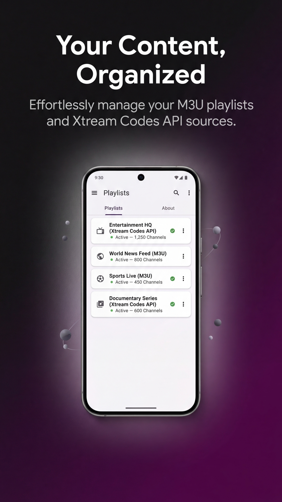

With the explosion of streaming content consumption, choosing the right free IPTV player has become essential. However, "free" often rhymes with "intrusive ads". In this comparison, we analyze why StreamVision is redefining the standards for 2026.
Key Features Comparison

| Feature | StreamVision | Others (Smarters, etc.) |
|---|---|---|
| Advertising | None (0%) | Intrusive / Banners |
| Price | 100% Free | Subscription or Premium |
| Interface | 4K Cinema / Modern | Dated / Standard |
| Privacy | Zero Collection | Ad Tracking |
Why StreamVision is the Best Choice?
Most applications like IPTV Smarters Pro or GSE Smart IPTV are excellent technical tools, but their business model relies on advertising. This means your viewing experience is regularly interrupted or slowed down.
StreamVision IPTV was designed by DIH LABS with a different philosophy: to offer a high-tech, fluid, and aesthetic tool without ever monetizing user attention. It's a pure player, compatible with all your M3U and Xtream Codes lists.
The Importance of 4K and HDR Support
In 2026, owning a player that doesn't natively handle high-resolution streams is a drawback. StreamVision integrates a rendering engine optimized for the latest Apple (A17/A18) and Android processors, ensuring perfect fluidity even on the heaviest streams.
Choose Freedom
Download the best ad-free free IPTV player today.